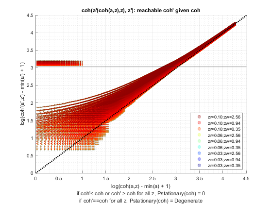
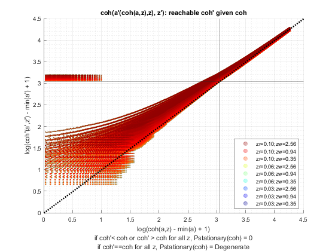
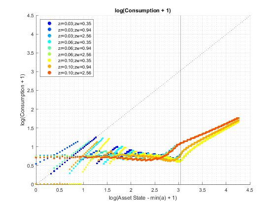
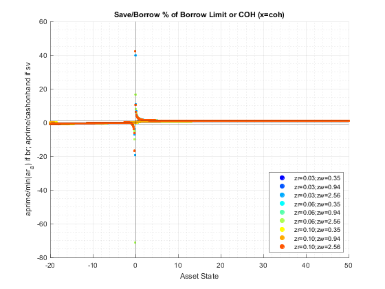
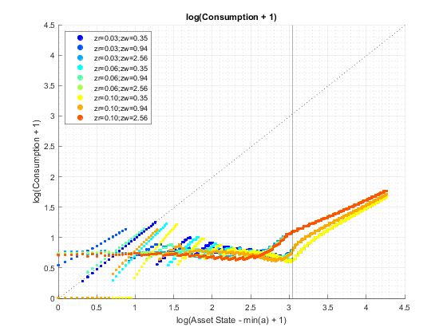
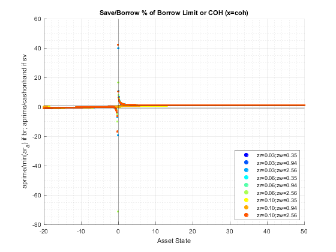

Contents
back to Fan's Dynamic Assets Repository Table of Content.
function result_map = ff_abz_vf_vecsv(varargin)
FF_ABZ_VF_VECSV solve infinite horizon exo shock + endo asset problem
This program solves the infinite horizon dynamic single asset and single shock problem with vectorized codes. ff_abz_vf shows looped codes. ff_abz_vf_vec shows vectorized codes. This file shows vectorized codes that is faster but is more memory intensive.
@param param_map container parameter container
@param support_map container support container
@param armt_map container container with states, choices and shocks grids that are inputs for grid based solution algorithm
@param func_map container container with function handles for consumption cash-on-hand etc.
@return result_map container contains policy function matrix, value function matrix, iteration results, and policy function, value function and iteration results tables.
keys included in result_map:
- mt_val matrix states_n by shock_n matrix of converged value function grid
- mt_pol_a matrix states_n by shock_n matrix of converged policy function grid
- ar_val_diff_norm array if bl_post = true it_iter_last by 1 val function difference between iteration
- ar_pol_diff_norm array if bl_post = true it_iter_last by 1 policy function difference between iterations
- mt_pol_perc_change matrix if bl_post = true it_iter_last by shock_n the proportion of grid points at which policy function changed between current and last iteration for each element of shock
@example
@include
Default
- it_param_set = 1: quick test
- it_param_set = 2: benchmark run
- it_param_set = 3: benchmark profile
- it_param_set = 4: press publish button
go to ffs_abz_set_default_param to change parameters in param_map container. The parameters can also be updated here directly after obtaining them from ffs_abz_set_default_param as we possibly change it_a_n and it_z_n here.
it_param_set = 4; bl_input_override = true; [param_map, support_map] = ffs_abz_set_default_param(it_param_set); param_map('it_a_n') = 100; param_map('it_z_n') = 5; [armt_map, func_map] = ffs_abz_get_funcgrid(param_map, support_map, bl_input_override); % 1 for override default_params = {param_map support_map armt_map func_map};
Warning: "C:\Users\fan\CodeDynaAsset\m_fibs\solve\profile" not found in path. Warning: "C:\Users\fan\CodeDynaAsset\m_fibs\solve\profile\ff_abz_fibs_vf_default_p3" not found in path.
Parse Parameters 1
% if varargin only has param_map and support_map, params_len = length(varargin); [default_params{1:params_len}] = varargin{:}; param_map = [param_map; default_params{1}]; support_map = [support_map; default_params{2}]; if params_len >= 1 && params_len <= 2 % If override param_map, re-generate armt and func if they are not % provided bl_input_override = true; [armt_map, func_map] = ffs_abz_get_funcgrid(param_map, support_map, bl_input_override); else % Override all armt_map = [armt_map; default_params{3}]; func_map = [func_map; default_params{4}]; end % append function name st_func_name = 'ff_abz_vf_vecsv'; support_map('st_profile_name_main') = [st_func_name support_map('st_profile_name_main')]; support_map('st_mat_name_main') = [st_func_name support_map('st_mat_name_main')]; support_map('st_img_name_main') = [st_func_name support_map('st_img_name_main')];
Parse Parameters 2
% armt_map params_group = values(armt_map, {'ar_a', 'mt_z_trans', 'ar_z'}); [ar_a, mt_z_trans, ar_z] = params_group{:}; % func_map params_group = values(func_map, {'f_util_log', 'f_util_crra', 'f_cons', 'f_coh', 'f_cons_coh'}); [f_util_log, f_util_crra, f_cons, f_coh, f_cons_coh] = params_group{:}; % param_map params_group = values(param_map, {'it_a_n', 'it_z_n', 'fl_crra', 'fl_beta', 'fl_c_min',... 'fl_nan_replace', 'bl_default', 'fl_default_aprime'}); [it_a_n, it_z_n, fl_crra, fl_beta, fl_c_min, ... fl_nan_replace, bl_default, fl_default_aprime] = params_group{:}; params_group = values(param_map, {'it_maxiter_val', 'fl_tol_val', 'fl_tol_pol', 'it_tol_pol_nochange'}); [it_maxiter_val, fl_tol_val, fl_tol_pol, it_tol_pol_nochange] = params_group{:}; % support_map params_group = values(support_map, {'bl_profile', 'st_profile_path', ... 'st_profile_prefix', 'st_profile_name_main', 'st_profile_suffix',... 'bl_time', 'bl_display', 'it_display_every', 'bl_post'}); [bl_profile, st_profile_path, ... st_profile_prefix, st_profile_name_main, st_profile_suffix, ... bl_time, bl_display, it_display_every, bl_post] = params_group{:};
Initialize Output Matrixes
include mt_pol_idx which we did not have in looped code
mt_val_cur = zeros(length(ar_a),length(ar_z)); mt_val = mt_val_cur - 1; mt_pol_a = zeros(length(ar_a),length(ar_z)); mt_pol_a_cur = mt_pol_a - 1; mt_pol_idx = zeros(length(ar_a),length(ar_z)); % We did not need these in ff_abz_vf or ff_abz_vf_vec % see % <https://fanwangecon.github.io/M4Econ/support/speed/partupdate/fs_u_c_partrepeat_main.html % fs_u_c_partrepeat_main> for why store using cells. cl_u_c_store = cell([it_z_n, 1]); cl_c_valid_idx = cell([it_z_n, 1]);
Initialize Convergence Conditions
bl_vfi_continue = true; it_iter = 0; ar_val_diff_norm = zeros([it_maxiter_val, 1]); ar_pol_diff_norm = zeros([it_maxiter_val, 1]); mt_pol_perc_change = zeros([it_maxiter_val, it_z_n]);
Iterate Value Function
Loop solution with 4 nested loops
- loop 1: over exogenous states
- loop 2: over endogenous states
- loop 3: over choices
- loop 4: add future utility, integration--loop over future shocks
% Start Profile if (bl_profile) close all; profile off; profile on; end % Start Timer if (bl_time) tic; end % Value Function Iteration while bl_vfi_continue
it_iter = it_iter + 1;
Solve Optimization Problem Current Iteration
Only this segment of code differs between ff_abz_vf and ff_abz_vf_vec Store in cells results and retrieve, this is more memory intensive than ff_abz_vf_vec.
% loop 1: over exogenous states for it_z_i = 1:length(ar_z) % Current Shock fl_z = ar_z(it_z_i); % cash-on-hand ar_coh = f_coh(fl_z, ar_a); % Consumption and u(c) only need to be evaluated once if (it_iter == 1) % Consumption mt_c = f_cons_coh(ar_coh, ar_a'); % EVAL current utility: N by N, f_util defined earlier % slightly faster to explicitly write function if (fl_crra == 1) mt_utility = log(mt_c); fl_u_cmin = f_util_log(fl_c_min); else % slightly faster if write function here directly, but % speed gain is very small, more important to have single % location control of functions. mt_utility = f_util_crra(mt_c); fl_u_cmin = f_util_crra(fl_c_min); end % Eliminate Complex Numbers mt_it_c_valid_idx = (mt_c <= fl_c_min); mt_utility(mt_it_c_valid_idx) = fl_u_cmin; % Store in cells cl_u_c_store{it_z_i} = mt_utility; cl_c_valid_idx{it_z_i} = mt_it_c_valid_idx; end % f(z'|z) ar_z_trans_condi = mt_z_trans(it_z_i,:); % EVAL EV((A',K'),Z'|Z) = V((A',K'),Z') x p(z'|z)', (N by Z) x (Z by 1) = N by 1 mt_evzp_condi_z = mt_val_cur * ar_z_trans_condi'; % EVAL add on future utility, N by N + N by 1 mt_utility = cl_u_c_store{it_z_i} + fl_beta*mt_evzp_condi_z; % Index update % using the method below is much faster than index replace % see <https://fanwangecon.github.io/M4Econ/support/speed/index/fs_subscript.html fs_subscript> mt_it_c_valid_idx = cl_c_valid_idx{it_z_i}; % Default or Not Utility Handling if (bl_default) % if default: only today u(cmin), transition out next period, debt wiped out fl_v_default = fl_u_cmin + fl_beta*mt_evzp_condi_z(ar_a == fl_default_aprime); mt_utility = mt_utility.*(~mt_it_c_valid_idx) + fl_v_default*(mt_it_c_valid_idx); else % if default is not allowed: v = u(cmin) mt_utility = mt_utility.*(~mt_it_c_valid_idx) + fl_nan_replace*(mt_it_c_valid_idx); end % Optimization: remember matlab is column major, rows must be % choices, columns must be states % <https://en.wikipedia.org/wiki/Row-_and_column-major_order COLUMN-MAJOR> [ar_opti_val_z, ar_opti_idx_z] = max(mt_utility); ar_opti_aprime_z = ar_a(ar_opti_idx_z); ar_opti_c_z = f_cons_coh(ar_coh, ar_opti_aprime_z); % Handle Default is optimal or not if (bl_default) % if defaulting is optimal choice, at these states, not required % to default, non-default possible, but default could be optimal ar_opti_aprime_z(ar_opti_c_z <= fl_c_min) = fl_default_aprime; else % if default is not allowed, then next period same state as now % this is absorbing state, this is the limiting case, single % state space point, lowest a and lowest shock has this. ar_opti_aprime_z(ar_opti_c_z <= fl_c_min) = ar_a(ar_opti_c_z <= fl_c_min); end % store optimal values mt_val(:,it_z_i) = ar_opti_val_z; mt_pol_a(:,it_z_i) = ar_opti_aprime_z; if (it_iter == (it_maxiter_val + 1)) mt_pol_idx(:,it_z_i) = ar_opti_idx_z; end end
Check Tolerance and Continuation
% Difference across iterations ar_val_diff_norm(it_iter) = norm(mt_val - mt_val_cur); ar_pol_diff_norm(it_iter) = norm(mt_pol_a - mt_pol_a_cur); mt_pol_perc_change(it_iter, :) = sum((mt_pol_a ~= mt_pol_a_cur))/(it_a_n); % Update mt_val_cur = mt_val; mt_pol_a_cur = mt_pol_a; % Print Iteration Results if (bl_display && (rem(it_iter, it_display_every)==0)) fprintf('VAL it_iter:%d, fl_diff:%d, fl_diff_pol:%d\n', ... it_iter, ar_val_diff_norm(it_iter), ar_pol_diff_norm(it_iter)); tb_valpol_iter = array2table([mean(mt_val_cur,1); mean(mt_pol_a_cur,1); ... mt_val_cur(it_a_n,:); mt_pol_a_cur(it_a_n,:)]); tb_valpol_iter.Properties.VariableNames = strcat('z', string((1:size(mt_val_cur,2)))); tb_valpol_iter.Properties.RowNames = {'mval', 'map', 'Hval', 'Hap'}; disp('mval = mean(mt_val_cur,1), average value over a') disp('map = mean(mt_pol_a_cur,1), average choice over a') disp('Hval = mt_val_cur(it_a_n,:), highest a state val') disp('Hap = mt_pol_a_cur(it_a_n,:), highest a state choice') disp(tb_valpol_iter); end % Continuation Conditions: % 1. if value function convergence criteria reached % 2. if policy function variation over iterations is less than % threshold if (it_iter == (it_maxiter_val + 1)) bl_vfi_continue = false; elseif ((it_iter == it_maxiter_val) || ... (ar_val_diff_norm(it_iter) < fl_tol_val) || ... (sum(ar_pol_diff_norm(max(1, it_iter-it_tol_pol_nochange):it_iter)) < fl_tol_pol)) % Fix to max, run again to save results if needed it_iter_last = it_iter; it_iter = it_maxiter_val; end
VAL it_iter:5, fl_diff:2.016360e+01, fl_diff_pol:4.553506e+01
mval = mean(mt_val_cur,1), average value over a
map = mean(mt_pol_a_cur,1), average choice over a
Hval = mt_val_cur(it_a_n,:), highest a state val
Hap = mt_pol_a_cur(it_a_n,:), highest a state choice
z1 z2 z3 z4 z5
______ ______ ______ ______ ______
mval 3.0909 3.9888 4.9027 5.3045 5.5904
map 7.8038 7.6408 7.8698 8.1798 8.6489
Hval 6.5836 6.6012 6.6266 6.6626 6.7104
Hap 35.152 35.152 35.152 35.859 35.859
VAL it_iter:10, fl_diff:1.034625e+01, fl_diff_pol:1.083756e+01
mval = mean(mt_val_cur,1), average value over a
map = mean(mt_pol_a_cur,1), average choice over a
Hval = mt_val_cur(it_a_n,:), highest a state val
Hap = mt_pol_a_cur(it_a_n,:), highest a state choice
z1 z2 z3 z4 z5
______ ______ ______ ______ ______
mval 3.9683 5.0377 6.5082 7.412 8.0693
map 11.234 11.269 11.3 11.75 12.485
Hval 10.019 10.076 10.154 10.256 10.383
Hap 42.222 42.222 42.222 42.929 43.636
VAL it_iter:15, fl_diff:6.129537e+00, fl_diff_pol:5.487850e+00
mval = mean(mt_val_cur,1), average value over a
map = mean(mt_pol_a_cur,1), average choice over a
Hval = mt_val_cur(it_a_n,:), highest a state val
Hap = mt_pol_a_cur(it_a_n,:), highest a state choice
z1 z2 z3 z4 z5
______ ______ ______ ______ ______
mval 4.1268 5.298 7.0209 8.2408 9.1917
map 12.235 12.382 12.413 12.919 13.782
Hval 11.947 12.04 12.165 12.325 12.521
Hap 43.636 44.343 44.343 45.051 45.758
VAL it_iter:20, fl_diff:4.006507e+00, fl_diff_pol:3.416912e+00
mval = mean(mt_val_cur,1), average value over a
map = mean(mt_pol_a_cur,1), average choice over a
Hval = mt_val_cur(it_a_n,:), highest a state val
Hap = mt_pol_a_cur(it_a_n,:), highest a state choice
z1 z2 z3 z4 z5
______ ______ ______ ______ ______
mval 3.9751 5.2016 7.0738 8.4837 9.6407
map 12.716 12.856 12.989 13.472 14.429
Hval 13.032 13.154 13.315 13.523 13.773
Hap 45.051 45.051 45.758 45.758 47.172
VAL it_iter:25, fl_diff:2.773112e+00, fl_diff_pol:2.192835e+00
mval = mean(mt_val_cur,1), average value over a
map = mean(mt_pol_a_cur,1), average choice over a
Hval = mt_val_cur(it_a_n,:), highest a state val
Hap = mt_pol_a_cur(it_a_n,:), highest a state choice
z1 z2 z3 z4 z5
______ ______ ______ ______ ______
mval 3.7059 4.9711 6.932 8.4608 9.7556
map 13.01 13.145 13.26 13.78 14.779
Hval 13.631 13.773 13.961 14.204 14.496
Hap 45.758 45.758 45.758 46.465 47.879
VAL it_iter:30, fl_diff:2.016125e+00, fl_diff_pol:1.870733e+00
mval = mean(mt_val_cur,1), average value over a
map = mean(mt_pol_a_cur,1), average choice over a
Hval = mt_val_cur(it_a_n,:), highest a state val
Hap = mt_pol_a_cur(it_a_n,:), highest a state choice
z1 z2 z3 z4 z5
______ ______ ______ ______ ______
mval 3.4154 4.7089 6.7204 8.324 9.711
map 13.166 13.341 13.442 13.988 14.989
Hval 13.942 14.099 14.312 14.58 14.903
Hap 45.758 45.758 46.465 47.172 47.879
VAL it_iter:35, fl_diff:1.539349e+00, fl_diff_pol:1.581058e+00
mval = mean(mt_val_cur,1), average value over a
map = mean(mt_pol_a_cur,1), average choice over a
Hval = mt_val_cur(it_a_n,:), highest a state val
Hap = mt_pol_a_cur(it_a_n,:), highest a state choice
z1 z2 z3 z4 z5
______ ______ ______ ______ ______
mval 3.137 4.4475 6.4959 8.1478 9.5963
map 13.299 13.43 13.554 14.095 15.13
Hval 14.085 14.254 14.477 14.766 15.112
Hap 46.465 46.465 46.465 47.172 47.879
VAL it_iter:40, fl_diff:1.190113e+00, fl_diff_pol:1.224682e+00
mval = mean(mt_val_cur,1), average value over a
map = mean(mt_pol_a_cur,1), average choice over a
Hval = mt_val_cur(it_a_n,:), highest a state val
Hap = mt_pol_a_cur(it_a_n,:), highest a state choice
z1 z2 z3 z4 z5
______ ______ ______ ______ ______
mval 2.8896 4.2126 6.2858 7.9692 9.4593
map 13.362 13.507 13.64 14.193 15.23
Hval 14.134 14.311 14.545 14.848 15.212
Hap 46.465 46.465 46.465 47.172 48.586
VAL it_iter:45, fl_diff:9.290553e-01, fl_diff_pol:1.144064e+00
mval = mean(mt_val_cur,1), average value over a
map = mean(mt_pol_a_cur,1), average choice over a
Hval = mt_val_cur(it_a_n,:), highest a state val
Hap = mt_pol_a_cur(it_a_n,:), highest a state choice
z1 z2 z3 z4 z5
______ ______ ______ ______ ______
mval 2.6804 4.0122 6.1013 7.8052 9.3226
map 13.397 13.549 13.703 14.265 15.272
Hval 14.124 14.308 14.552 14.865 15.245
Hap 46.465 46.465 47.172 47.172 48.586
VAL it_iter:50, fl_diff:7.271268e-01, fl_diff_pol:7.070707e-01
mval = mean(mt_val_cur,1), average value over a
map = mean(mt_pol_a_cur,1), average choice over a
Hval = mt_val_cur(it_a_n,:), highest a state val
Hap = mt_pol_a_cur(it_a_n,:), highest a state choice
z1 z2 z3 z4 z5
______ ______ ______ ______ ______
mval 2.5085 3.8461 5.9456 7.663 9.1982
map 13.418 13.584 13.738 14.314 15.314
Hval 14.091 14.279 14.531 14.85 15.24
Hap 46.465 46.465 47.172 47.879 48.586
VAL it_iter:55, fl_diff:5.688738e-01, fl_diff_pol:7.070707e-01
mval = mean(mt_val_cur,1), average value over a
map = mean(mt_pol_a_cur,1), average choice over a
Hval = mt_val_cur(it_a_n,:), highest a state val
Hap = mt_pol_a_cur(it_a_n,:), highest a state choice
z1 z2 z3 z4 z5
______ ______ ______ ______ ______
mval 2.3694 3.7111 5.8173 7.5436 9.0904
map 13.439 13.612 13.759 14.342 15.335
Hval 14.05 14.24 14.497 14.822 15.217
Hap 46.465 46.465 47.172 47.879 48.586
VAL it_iter:60, fl_diff:4.436924e-01, fl_diff_pol:7.070707e-01
mval = mean(mt_val_cur,1), average value over a
map = mean(mt_pol_a_cur,1), average choice over a
Hval = mt_val_cur(it_a_n,:), highest a state val
Hap = mt_pol_a_cur(it_a_n,:), highest a state choice
z1 z2 z3 z4 z5
______ ______ ______ ______ ______
mval 2.2586 3.6028 5.7134 7.4455 9
map 13.46 13.633 13.773 14.356 15.363
Hval 14.004 14.196 14.457 14.787 15.187
Hap 46.465 46.465 47.172 47.879 48.586
VAL it_iter:65, fl_diff:3.440642e-01, fl_diff_pol:7.070707e-01
mval = mean(mt_val_cur,1), average value over a
map = mean(mt_pol_a_cur,1), average choice over a
Hval = mt_val_cur(it_a_n,:), highest a state val
Hap = mt_pol_a_cur(it_a_n,:), highest a state choice
z1 z2 z3 z4 z5
______ ______ ______ ______ ______
mval 2.1715 3.5174 5.6307 7.3664 8.9258
map 13.467 13.654 13.78 14.363 15.384
Hval 13.957 14.152 14.416 14.75 15.154
Hap 46.465 46.465 47.172 47.879 48.586
VAL it_iter:70, fl_diff:2.646717e-01, fl_diff_pol:7.070707e-01
mval = mean(mt_val_cur,1), average value over a
map = mean(mt_pol_a_cur,1), average choice over a
Hval = mt_val_cur(it_a_n,:), highest a state val
Hap = mt_pol_a_cur(it_a_n,:), highest a state choice
z1 z2 z3 z4 z5
______ ______ ______ ______ ______
mval 2.1042 3.4511 5.5659 7.3038 8.8662
map 13.474 13.661 13.787 14.37 15.391
Hval 13.915 14.11 14.376 14.713 15.12
Hap 46.465 46.465 47.172 47.879 48.586
VAL it_iter:75, fl_diff:2.018908e-01, fl_diff_pol:0
mval = mean(mt_val_cur,1), average value over a
map = mean(mt_pol_a_cur,1), average choice over a
Hval = mt_val_cur(it_a_n,:), highest a state val
Hap = mt_pol_a_cur(it_a_n,:), highest a state choice
z1 z2 z3 z4 z5
______ ______ ______ ______ ______
mval 2.0527 3.4002 5.516 7.2552 8.8194
map 13.474 13.661 13.794 14.377 15.398
Hval 13.878 14.074 14.342 14.68 15.089
Hap 46.465 46.465 47.172 47.879 48.586
VAL it_iter:80, fl_diff:1.528689e-01, fl_diff_pol:7.070707e-01
mval = mean(mt_val_cur,1), average value over a
map = mean(mt_pol_a_cur,1), average choice over a
Hval = mt_val_cur(it_a_n,:), highest a state val
Hap = mt_pol_a_cur(it_a_n,:), highest a state choice
z1 z2 z3 z4 z5
______ ______ ______ ______ ______
mval 2.0138 3.3616 5.4779 7.2179 8.7832
map 13.481 13.675 13.794 14.377 15.405
Hval 13.847 14.044 14.312 14.652 15.062
Hap 46.465 46.465 47.172 47.879 48.586
VAL it_iter:85, fl_diff:1.150387e-01, fl_diff_pol:0
mval = mean(mt_val_cur,1), average value over a
map = mean(mt_pol_a_cur,1), average choice over a
Hval = mt_val_cur(it_a_n,:), highest a state val
Hap = mt_pol_a_cur(it_a_n,:), highest a state choice
z1 z2 z3 z4 z5
______ ______ ______ ______ ______
mval 1.9845 3.3325 5.4491 7.1896 8.7555
map 13.488 13.675 13.794 14.377 15.405
Hval 13.823 14.02 14.289 14.629 15.04
Hap 46.465 46.465 47.172 47.879 48.586
VAL it_iter:90, fl_diff:8.613131e-02, fl_diff_pol:0
mval = mean(mt_val_cur,1), average value over a
map = mean(mt_pol_a_cur,1), average choice over a
Hval = mt_val_cur(it_a_n,:), highest a state val
Hap = mt_pol_a_cur(it_a_n,:), highest a state choice
z1 z2 z3 z4 z5
______ ______ ______ ______ ______
mval 1.9626 3.3107 5.4275 7.1682 8.7345
map 13.488 13.675 13.794 14.377 15.405
Hval 13.804 14.001 14.27 14.611 15.022
Hap 46.465 46.465 47.172 47.879 48.586
VAL it_iter:95, fl_diff:6.422954e-02, fl_diff_pol:0
mval = mean(mt_val_cur,1), average value over a
map = mean(mt_pol_a_cur,1), average choice over a
Hval = mt_val_cur(it_a_n,:), highest a state val
Hap = mt_pol_a_cur(it_a_n,:), highest a state choice
z1 z2 z3 z4 z5
______ ______ ______ ______ ______
mval 1.9462 3.2944 5.4114 7.1522 8.7187
map 13.488 13.675 13.794 14.377 15.405
Hval 13.789 13.987 14.256 14.597 15.008
Hap 46.465 46.465 47.172 47.879 48.586
VAL it_iter:100, fl_diff:4.774848e-02, fl_diff_pol:0
mval = mean(mt_val_cur,1), average value over a
map = mean(mt_pol_a_cur,1), average choice over a
Hval = mt_val_cur(it_a_n,:), highest a state val
Hap = mt_pol_a_cur(it_a_n,:), highest a state choice
z1 z2 z3 z4 z5
______ ______ ______ ______ ______
mval 1.9341 3.2824 5.3994 7.1403 8.7069
map 13.488 13.675 13.794 14.377 15.405
Hval 13.778 13.976 14.245 14.586 14.998
Hap 46.465 46.465 47.172 47.879 48.586
VAL it_iter:105, fl_diff:3.540906e-02, fl_diff_pol:0
mval = mean(mt_val_cur,1), average value over a
map = mean(mt_pol_a_cur,1), average choice over a
Hval = mt_val_cur(it_a_n,:), highest a state val
Hap = mt_pol_a_cur(it_a_n,:), highest a state choice
z1 z2 z3 z4 z5
______ ______ ______ ______ ______
mval 1.9251 3.2734 5.3904 7.1314 8.6981
map 13.488 13.675 13.794 14.377 15.405
Hval 13.77 13.968 14.237 14.578 14.989
Hap 46.465 46.465 47.172 47.879 48.586
VAL it_iter:110, fl_diff:2.620678e-02, fl_diff_pol:0
mval = mean(mt_val_cur,1), average value over a
map = mean(mt_pol_a_cur,1), average choice over a
Hval = mt_val_cur(it_a_n,:), highest a state val
Hap = mt_pol_a_cur(it_a_n,:), highest a state choice
z1 z2 z3 z4 z5
______ ______ ______ ______ ______
mval 1.9185 3.2668 5.3838 7.1249 8.6916
map 13.488 13.675 13.794 14.377 15.405
Hval 13.763 13.961 14.23 14.572 14.983
Hap 46.465 46.465 47.172 47.879 48.586
end % End Timer if (bl_time) toc; end % End Profile if (bl_profile) profile off profile viewer st_file_name = [st_profile_prefix st_profile_name_main st_profile_suffix]; profsave(profile('info'), strcat(st_profile_path, st_file_name)); end
Elapsed time is 1.530281 seconds.
Process Optimal Choices
result_map = containers.Map('KeyType','char', 'ValueType','any'); result_map('mt_val') = mt_val; result_map('mt_pol_a') = mt_pol_a; result_map('mt_pol_idx') = mt_pol_idx; if (bl_post) bl_input_override = true; result_map('ar_val_diff_norm') = ar_val_diff_norm(1:it_iter_last); result_map('ar_pol_diff_norm') = ar_pol_diff_norm(1:it_iter_last); result_map('mt_pol_perc_change') = mt_pol_perc_change(1:it_iter_last, :); result_map = ff_az_vf_post(param_map, support_map, armt_map, func_map, result_map, bl_input_override); end
Warning: Directory already exists.
valgap = norm(mt_val - mt_val_cur)
polgap = norm(mt_pol_a - mt_pol_a_cur)
z1 = z1 perc change: sum((mt_pol_a ~= mt_pol_a_cur))/(it_a_n)
valgap polgap z1 z2 z3 z4 z5
________ _______ ____ ____ ____ ____ ____
iter=1 66.291 426.18 1.01 1.01 1.01 1.01 1.01
iter=2 43.916 454.1 0.99 1 1 1 1
iter=3 31.027 151.92 0.97 0.98 0.98 0.98 1
iter=4 24.192 75.682 0.94 0.95 0.95 0.96 0.99
iter=5 20.164 45.535 0.9 0.91 0.91 0.92 0.92
iter=6 17.361 30.706 0.85 0.85 0.85 0.86 0.89
iter=7 15.177 22.117 0.78 0.77 0.78 0.81 0.86
iter=8 13.391 16.848 0.73 0.72 0.75 0.76 0.78
iter=9 11.713 21.388 0.63 0.66 0.59 0.67 0.73
iter=10 10.346 10.838 0.54 0.52 0.56 0.58 0.6
iter=11 9.2132 9.3169 0.36 0.46 0.46 0.46 0.51
iter=12 8.2629 8.1333 0.35 0.35 0.36 0.41 0.42
iter=13 7.4484 7.2078 0.3 0.3 0.28 0.31 0.36
iter=14 6.7425 6.2109 0.22 0.24 0.29 0.27 0.34
iter=15 6.1295 5.4878 0.21 0.24 0.21 0.23 0.25
iter=16 5.5969 4.7713 0.2 0.17 0.23 0.21 0.24
iter=17 5.1286 4.2443 0.12 0.13 0.18 0.18 0.23
iter=18 4.712 3.8768 0.18 0.17 0.15 0.17 0.14
iter=19 4.3386 3.3964 0.09 0.12 0.13 0.12 0.15
iter=20 4.0065 3.4169 0.1 0.09 0.14 0.12 0.17
iter=21 3.7102 2.9801 0.1 0.12 0.07 0.13 0.1
iter=22 3.442 2.6387 0.1 0.09 0.07 0.12 0.11
iter=23 3.201 2.2042 0.06 0.1 0.08 0.07 0.09
iter=24 2.9842 2.3655 0.11 0.06 0.09 0.06 0.11
iter=25 2.7731 2.1928 0.05 0.07 0.08 0.06 0.09
iter=26 2.5839 1.9999 0.06 0.06 0.06 0.06 0.08
iter=27 2.4161 1.8707 0.05 0.05 0.06 0.07 0.04
iter=28 2.2659 1.732 0.04 0.06 0.05 0.04 0.06
iter=29 2.1341 1.9999 0.05 0.04 0.04 0.08 0.06
iter=30 2.0161 1.8707 0.03 0.07 0.05 0.05 0.06
iter=31 1.9078 1.4141 0.04 0.03 0.02 0.03 0.04
iter=32 1.8065 1.5811 0.03 0.04 0.04 0.04 0.05
iter=33 1.7115 1.5811 0.05 0.03 0.03 0.03 0.04
iter=34 1.6226 1.4141 0.02 0.02 0.02 0.02 0.04
iter=35 1.5393 1.5811 0.05 0.01 0.05 0.04 0.03
iter=36 1.4604 1.732 0.03 0.04 0.03 0.04 0.06
iter=37 1.3864 1.4141 0 0.01 0.04 0.03 0.04
iter=38 1.317 1.4141 0.02 0.02 0.02 0.02 0.02
iter=39 1.2517 1.1441 0.01 0.01 0.02 0.02 0.02
iter=40 1.1901 1.2247 0.03 0.03 0.02 0.03 0.01
iter=41 1.132 0.99995 0 0.01 0.02 0.02 0.01
iter=42 1.0772 1.1441 0.01 0 0.02 0.03 0.02
iter=43 1.0253 1.2247 0.02 0.02 0.02 0.03 0.01
iter=44 0.97594 0.99995 0 0.02 0.02 0.02 0.01
iter=45 0.92906 1.1441 0.02 0.01 0.01 0.01 0.01
iter=46 0.88451 0.99995 0 0.01 0.02 0.01 0.01
iter=47 0.84223 1.2247 0.01 0.01 0 0.03 0.01
iter=48 0.80198 0.70707 0.01 0.01 0.01 0.01 0.01
iter=49 0.76364 0.99995 0 0.01 0.01 0.01 0.02
iter=50 0.72713 0.70707 0.01 0.01 0.01 0.01 0.01
iter=61 0.42192 0.99995 0 0 0 0 0.02
iter=62 0.40112 0.99995 0 0.02 0 0 0
iter=63 0.38124 0.70707 0.01 0 0 0 0
iter=64 0.36223 0.70707 0 0 0.01 0.01 0.01
iter=65 0.34406 0.70707 0 0.01 0 0 0
iter=66 0.3267 0.70707 0 0 0 0.01 0
iter=67 0.31011 0 0 0 0 0 0
iter=68 0.29426 0.70707 0 0 0.01 0 0
iter=69 0.27912 0.70707 0.01 0 0 0 0.01
iter=70 0.26467 0.70707 0 0.01 0 0 0
iter=71 0.25088 0.70707 0 0 0 0.01 0.01
iter=72 0.23773 0.70707 0 0 0.01 0 0
iter=73 0.2252 0 0 0 0 0 0
iter=74 0.21326 0 0 0 0 0 0
iter=75 0.20189 0 0 0 0 0 0
iter=76 0.19107 0.70707 0 0 0 0 0.01
iter=77 0.18078 0 0 0 0 0 0
iter=78 0.171 0.70707 0.01 0 0 0 0
iter=79 0.1617 0.70707 0 0.01 0 0 0
iter=80 0.15287 0.70707 0 0.01 0 0 0
iter=81 0.14448 0 0 0 0 0 0
iter=82 0.13653 0 0 0 0 0 0
iter=83 0.12898 0 0 0 0 0 0
iter=84 0.12182 0.70707 0.01 0 0 0 0
iter=85 0.11504 0 0 0 0 0 0
iter=86 0.10861 0 0 0 0 0 0
iter=87 0.10252 0 0 0 0 0 0
iter=88 0.096754 0 0 0 0 0 0
iter=89 0.091296 0 0 0 0 0 0
iter=90 0.086131 0 0 0 0 0 0
iter=91 0.081246 0 0 0 0 0 0
iter=92 0.076626 0 0 0 0 0 0
iter=93 0.072258 0 0 0 0 0 0
iter=94 0.06813 0 0 0 0 0 0
iter=95 0.06423 0 0 0 0 0 0
iter=96 0.060545 0 0 0 0 0 0
iter=97 0.057065 0 0 0 0 0 0
iter=98 0.053779 0 0 0 0 0 0
iter=99 0.050677 0 0 0 0 0 0
iter=100 0.047748 0 0 0 0 0 0
iter=101 0.044985 0 0 0 0 0 0
iter=102 0.042378 0 0 0 0 0 0
iter=103 0.039918 0 0 0 0 0 0
iter=104 0.037597 0 0 0 0 0 0
iter=105 0.035409 0 0 0 0 0 0
iter=106 0.033345 0 0 0 0 0 0
iter=107 0.0314 0 0 0 0 0 0
iter=108 0.029565 0 0 0 0 0 0
iter=109 0.027836 0 0 0 0 0 0
iter=110 0.026207 0 0 0 0 0 0
tb_val
z1_0_33942 z2_0_5596 z3_0_92263 z4_1_5212 z5_2_508
__________ _________ __________ _________ ________
a1=-20 -59.415 -58.658 -32.444 -16.95 -7.8736
a2=-19.2929 -56.419 -49.886 -27.878 -14.546 -6.7038
a3=-18.5859 -51.361 -40.927 -23.428 -12.58 -5.6658
a4=-17.8788 -45.078 -34.065 -19.927 -10.946 -4.7291
a5=-17.1717 -38.899 -29.033 -17.229 -9.5354 -3.8732
a6=-16.4646 -33.469 -25.115 -15.033 -8.2839 -3.0876
a7=-15.7576 -28.884 -21.912 -13.171 -7.1528 -2.3629
a8=-15.0505 -25.046 -19.106 -11.513 -6.1265 -1.6911
a9=-14.3434 -21.781 -16.645 -10.033 -5.1911 -1.0652
a10=-13.6364 -18.971 -14.484 -8.7078 -4.3345 -0.47919
a11=-12.9293 -16.533 -12.58 -7.5158 -3.5462 0.072366
a12=-12.2222 -14.402 -10.896 -6.4391 -2.8168 0.59352
a13=-11.5152 -12.529 -9.4019 -5.4619 -2.1385 1.0888
a14=-10.8081 -10.875 -8.0697 -4.5704 -1.5039 1.5603
a15=-10.101 -9.4064 -6.8766 -3.7528 -0.90682 2.0119
a16=-9.39394 -8.0964 -5.8028 -2.999 -0.34135 2.4435
a17=-8.68687 -6.922 -4.8316 -2.2999 0.19793 2.8579
a18=-7.9798 -5.8638 -3.9485 -1.6475 0.71654 3.2514
a19=-7.27273 -4.9056 -3.1411 -1.0351 1.2188 3.6262
a20=-6.56566 -4.0333 -2.3988 -0.46385 1.6901 3.9852
a21=-5.85859 -3.235 -1.714 0.070641 2.1336 4.3301
a22=-5.15152 -2.501 -1.0799 0.57245 2.5527 4.6641
a23=-4.44444 -1.8234 -0.49071 1.0523 2.9544 4.9851
a24=-3.73737 -1.1952 0.060195 1.5172 3.3438 5.2955
a25=-3.0303 -0.61026 0.57919 1.9658 3.7197 5.5924
a26=-2.32323 -0.062395 1.0706 2.3975 4.0822 5.88
a27=-1.61616 0.45342 1.5376 2.8124 4.4309 6.1533
a28=-0.909091 0.94127 1.9826 3.211 4.7668 6.419
a29=-0.20202 1.4044 2.4075 3.5937 5.1027 6.6599
a30=0 1.5567 2.5193 3.7105 5.1865 6.7403
a31=0.505051 1.8412 2.8108 3.9827 5.407 6.8968
a32=1.21212 2.2863 3.1983 4.3259 5.691 7.1274
a33=1.91919 2.6636 3.5653 4.6537 5.9632 7.3512
a34=2.62626 3.0518 3.912 4.9666 6.224 7.5661
a35=3.33333 3.4091 4.242 5.2654 6.4737 7.7727
a36=4.0404 3.7648 4.5559 5.5508 6.7131 7.9715
a37=4.74747 4.0967 4.8558 5.8237 6.9427 8.163
a38=5.45455 4.4216 5.1423 6.0847 7.1632 8.348
a39=6.16162 4.7278 5.4205 6.3346 7.3751 8.527
a40=6.86869 5.0248 5.6909 6.5747 7.5794 8.7008
a41=7.57576 5.3081 5.9524 6.8057 7.7767 8.87
a42=8.28283 5.5832 6.2061 7.0284 7.9676 9.0353
a43=8.9899 5.8471 6.4511 7.2434 8.1526 9.1978
a44=9.69697 6.1034 6.6886 7.4513 8.3346 9.3575
a45=10.404 6.3501 6.9181 7.6527 8.5139 9.514
a46=11.1111 6.5896 7.1405 7.8482 8.6899 9.6671
a47=11.8182 6.8206 7.3555 8.0382 8.8621 9.8168
a48=12.5253 7.0448 7.5641 8.223 9.0304 9.9632
a49=13.2323 7.2613 7.7661 8.4027 9.1948 10.107
a50=13.9394 7.4716 7.9623 8.5797 9.3552 10.247
a51=14.6465 7.675 8.1525 8.7529 9.5121 10.384
a52=15.3535 7.8726 8.3377 8.9229 9.6658 10.519
a53=16.0606 8.064 8.5178 9.0892 9.8163 10.652
a54=16.7677 8.2503 8.6935 9.2523 9.9638 10.781
a55=17.4747 8.4311 8.8646 9.4118 10.108 10.909
a56=18.1818 8.6072 9.0317 9.5681 10.25 11.034
a57=18.8889 8.7785 9.1946 9.721 10.389 11.157
a58=19.596 8.9456 9.354 9.8709 10.525 11.278
a59=20.303 9.1107 9.5094 10.017 10.658 11.397
a60=21.0101 9.2718 9.6616 10.161 10.789 11.515
a61=21.7172 9.4292 9.8102 10.302 10.918 11.631
a62=22.4242 9.584 9.9558 10.439 11.043 11.745
a63=23.1313 9.7352 10.098 10.574 11.167 11.857
a64=23.8384 9.883 10.238 10.706 11.288 11.967
a65=24.5455 10.028 10.374 10.836 11.407 12.075
a66=25.2525 10.17 10.508 10.963 11.523 12.181
a67=25.9596 10.309 10.64 11.087 11.638 12.285
a68=26.6667 10.445 10.77 11.209 11.75 12.387
a69=27.3737 10.578 10.897 11.329 11.86 12.488
a70=28.0808 10.709 11.023 11.446 11.968 12.586
a71=28.7879 10.838 11.146 11.562 12.074 12.683
a72=29.4949 10.964 11.267 11.675 12.178 12.778
a73=30.202 11.088 11.386 11.786 12.28 12.871
a74=30.9091 11.21 11.503 11.895 12.381 12.963
a75=31.6162 11.329 11.618 12.002 12.48 13.054
a76=32.3232 11.447 11.731 12.107 12.578 13.143
a77=33.0303 11.562 11.841 12.211 12.674 13.232
a78=33.7374 11.676 11.95 12.313 12.77 13.319
a79=34.4444 11.787 12.058 12.413 12.863 13.405
a80=35.1515 11.897 12.163 12.511 12.956 13.49
a81=35.8586 12.004 12.266 12.608 13.048 13.574
a82=36.5657 12.11 12.368 12.705 13.138 13.656
a83=37.2727 12.214 12.468 12.799 13.227 13.738
a84=37.9798 12.317 12.567 12.893 13.314 13.818
a85=38.6869 12.417 12.664 12.985 13.401 13.898
a86=39.3939 12.516 12.76 13.076 13.486 13.976
a87=40.101 12.614 12.853 13.166 13.57 14.053
a88=40.8081 12.71 12.946 13.254 13.653 14.13
a89=41.5152 12.804 13.037 13.342 13.735 14.205
a90=42.2222 12.897 13.127 13.428 13.816 14.28
a91=42.9293 12.989 13.216 13.513 13.896 14.353
a92=43.6364 13.08 13.303 13.597 13.975 14.426
a93=44.3434 13.169 13.389 13.68 14.053 14.498
a94=45.0505 13.257 13.474 13.761 14.13 14.569
a95=45.7576 13.344 13.558 13.842 14.205 14.64
a96=46.4646 13.43 13.641 13.921 14.28 14.71
a97=47.1717 13.515 13.722 14 14.354 14.78
a98=47.8788 13.598 13.803 14.077 14.427 14.848
a99=48.5859 13.681 13.882 14.154 14.499 14.916
a100=49.2929 13.762 13.96 14.229 14.571 14.982
tb_pol_a
z1_0_33942 z2_0_5596 z3_0_92263 z4_1_5212 z5_2_508
__________ _________ __________ _________ ________
a1=-20 0 0 -20 -19.293 -18.586
a2=-19.2929 -20 -20 -19.293 -18.586 -17.879
a3=-18.5859 -19.293 -18.586 -18.586 -17.879 -17.172
a4=-17.8788 -18.586 -17.879 -17.879 -17.172 -16.465
a5=-17.1717 -17.879 -17.172 -17.172 -16.465 -15.758
a6=-16.4646 -17.172 -16.465 -16.465 -15.758 -15.051
a7=-15.7576 -16.465 -16.465 -15.758 -15.051 -14.343
a8=-15.0505 -15.758 -15.758 -15.051 -14.343 -13.636
a9=-14.3434 -15.051 -15.051 -14.343 -13.636 -12.929
a10=-13.6364 -14.343 -14.343 -13.636 -12.929 -12.222
a11=-12.9293 -13.636 -13.636 -12.929 -12.222 -11.515
a12=-12.2222 -12.929 -12.929 -12.222 -11.515 -10.808
a13=-11.5152 -12.222 -12.222 -11.515 -10.808 -10.101
a14=-10.8081 -11.515 -11.515 -10.808 -10.101 -9.3939
a15=-10.101 -10.808 -10.808 -10.101 -9.3939 -8.6869
a16=-9.39394 -10.101 -10.101 -9.3939 -8.6869 -7.9798
a17=-8.68687 -9.3939 -9.3939 -8.6869 -7.9798 -7.2727
a18=-7.9798 -8.6869 -8.6869 -7.9798 -7.9798 -6.5657
a19=-7.27273 -7.9798 -7.9798 -7.2727 -7.2727 -5.8586
a20=-6.56566 -7.2727 -7.2727 -6.5657 -6.5657 -5.1515
a21=-5.85859 -6.5657 -6.5657 -5.8586 -5.8586 -4.4444
a22=-5.15152 -5.8586 -5.8586 -5.1515 -5.1515 -3.7374
a23=-4.44444 -5.1515 -5.1515 -5.1515 -4.4444 -3.0303
a24=-3.73737 -4.4444 -4.4444 -4.4444 -3.7374 -2.3232
a25=-3.0303 -3.7374 -3.7374 -3.7374 -3.0303 -1.6162
a26=-2.32323 -3.0303 -3.0303 -3.0303 -2.3232 -0.90909
a27=-1.61616 -2.3232 -2.3232 -2.3232 -1.6162 -0.20202
a28=-0.909091 -1.6162 -1.6162 -1.6162 -0.90909 0
a29=-0.20202 -0.90909 -0.90909 -0.90909 0 1.2121
a30=0 -0.90909 -0.90909 -0.20202 0 1.2121
a31=0.505051 -0.20202 -0.20202 0 0.50505 1.9192
a32=1.21212 0 0.50505 0.50505 1.2121 1.9192
a33=1.91919 1.2121 1.2121 1.2121 1.9192 2.6263
a34=2.62626 1.2121 1.9192 1.9192 2.6263 3.3333
a35=3.33333 1.9192 2.6263 2.6263 3.3333 4.0404
a36=4.0404 2.6263 3.3333 3.3333 4.0404 4.7475
a37=4.74747 3.3333 4.0404 4.0404 4.7475 5.4545
a38=5.45455 4.0404 4.7475 4.7475 5.4545 6.1616
a39=6.16162 4.7475 4.7475 5.4545 6.1616 6.8687
a40=6.86869 5.4545 5.4545 6.1616 6.8687 7.5758
a41=7.57576 6.1616 6.1616 6.8687 7.5758 8.2828
a42=8.28283 6.8687 6.8687 7.5758 8.2828 8.9899
a43=8.9899 7.5758 7.5758 8.2828 8.9899 9.697
a44=9.69697 8.2828 8.2828 8.9899 8.9899 10.404
a45=10.404 8.9899 8.9899 9.697 9.697 11.111
a46=11.1111 9.697 9.697 10.404 10.404 11.818
a47=11.8182 10.404 10.404 11.111 11.111 12.525
a48=12.5253 11.111 11.111 11.818 11.818 13.232
a49=13.2323 11.818 11.818 12.525 12.525 13.939
a50=13.9394 12.525 12.525 12.525 13.232 14.646
a51=14.6465 13.232 13.232 13.232 13.939 15.354
a52=15.3535 13.939 13.939 13.939 14.646 16.061
a53=16.0606 14.646 14.646 14.646 15.354 16.768
a54=16.7677 15.354 15.354 15.354 16.061 17.475
a55=17.4747 16.061 16.061 16.061 16.768 18.182
a56=18.1818 16.768 16.768 16.768 17.475 18.889
a57=18.8889 17.475 17.475 17.475 18.182 19.596
a58=19.596 18.182 18.182 18.182 18.889 20.303
a59=20.303 18.182 18.889 18.889 19.596 21.01
a60=21.0101 18.889 19.596 19.596 20.303 21.01
a61=21.7172 19.596 20.303 20.303 21.01 21.717
a62=22.4242 20.303 21.01 21.01 21.717 22.424
a63=23.1313 21.01 21.717 21.717 22.424 23.131
a64=23.8384 21.717 22.424 22.424 23.131 23.838
a65=24.5455 22.424 23.131 23.131 23.838 24.545
a66=25.2525 23.131 23.838 23.838 24.545 25.253
a67=25.9596 23.838 23.838 24.545 25.253 25.96
a68=26.6667 24.545 24.545 25.253 25.96 26.667
a69=27.3737 25.253 25.253 25.96 26.667 27.374
a70=28.0808 25.96 25.96 26.667 27.374 28.081
a71=28.7879 26.667 26.667 27.374 28.081 28.788
a72=29.4949 27.374 27.374 28.081 28.788 29.495
a73=30.202 28.081 28.081 28.788 29.495 30.202
a74=30.9091 28.788 28.788 29.495 30.202 30.909
a75=31.6162 29.495 29.495 30.202 30.202 31.616
a76=32.3232 30.202 30.202 30.909 30.909 32.323
a77=33.0303 30.909 30.909 31.616 31.616 33.03
a78=33.7374 31.616 31.616 32.323 32.323 33.737
a79=34.4444 32.323 32.323 33.03 33.03 34.444
a80=35.1515 33.03 33.03 33.737 33.737 35.152
a81=35.8586 33.737 33.737 33.737 34.444 35.859
a82=36.5657 34.444 34.444 34.444 35.152 36.566
a83=37.2727 35.152 35.152 35.152 35.859 37.273
a84=37.9798 35.859 35.859 35.859 36.566 37.98
a85=38.6869 36.566 36.566 36.566 37.273 38.687
a86=39.3939 37.273 37.273 37.273 37.98 39.394
a87=40.101 37.98 37.98 37.98 38.687 40.101
a88=40.8081 38.687 38.687 38.687 39.394 40.808
a89=41.5152 39.394 39.394 39.394 40.101 41.515
a90=42.2222 40.101 40.101 40.101 40.808 42.222
a91=42.9293 40.101 40.808 40.808 41.515 42.929
a92=43.6364 40.808 41.515 41.515 42.222 42.929
a93=44.3434 41.515 42.222 42.222 42.929 43.636
a94=45.0505 42.222 42.929 42.929 43.636 44.343
a95=45.7576 42.929 43.636 43.636 44.343 45.051
a96=46.4646 43.636 44.343 44.343 45.051 45.758
a97=47.1717 44.343 45.051 45.051 45.758 46.465
a98=47.8788 45.051 45.758 45.758 46.465 47.172
a99=48.5859 45.758 46.465 46.465 47.172 47.879
a100=49.2929 46.465 46.465 47.172 47.879 48.586
 
 


  
  
end
ans =
Map with properties:
Count: 11
KeyType: char
ValueType: any